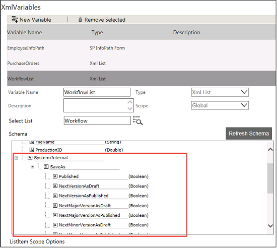
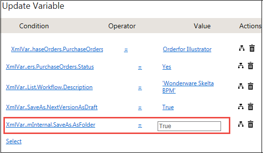

No
If your list is version enabled, you can save the item into a folder using System Internal variables. This can be done at the time of setting the value for Update Variable activity.
Assume that you need to create a folder in Workflows list which is version enabled.
To create a new folder using XML Variable


Note: Folder names should not have special characters like such as, :, ", \, \, " ", ', <, >, ;, |, *, /, {, }, and ?.